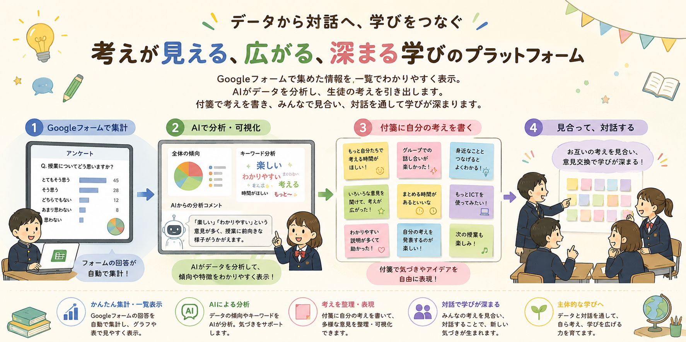
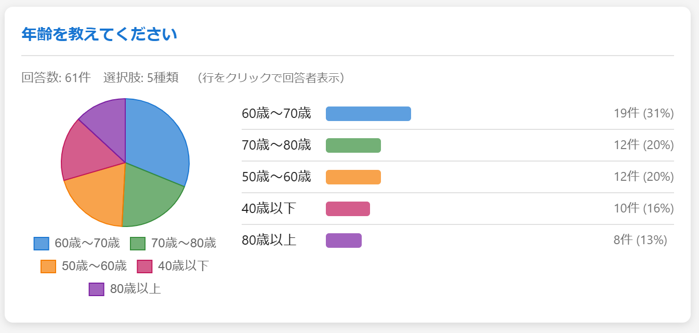
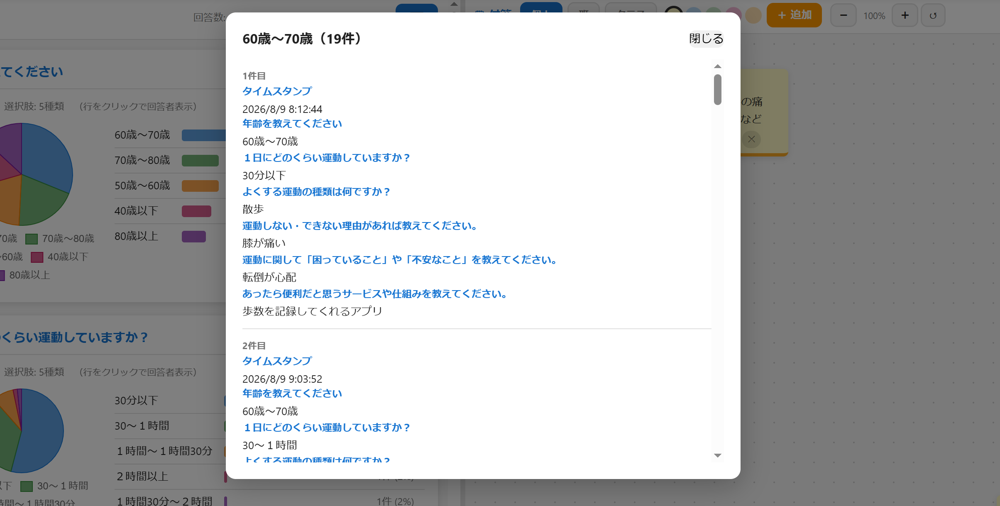
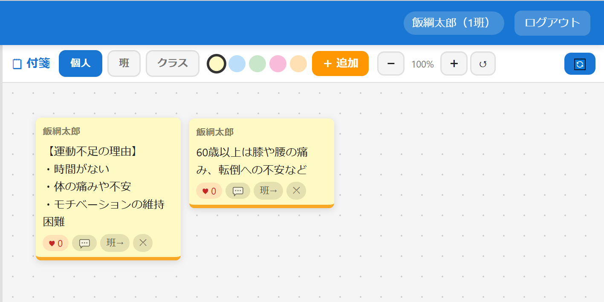
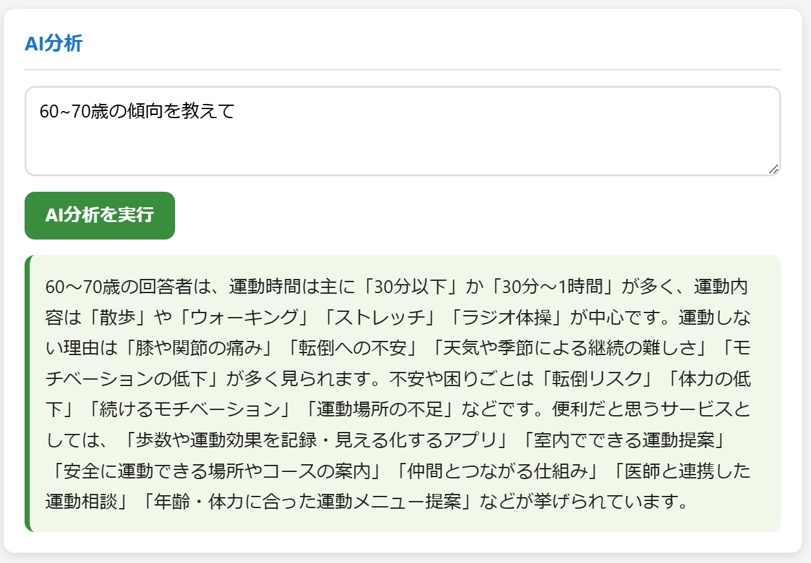
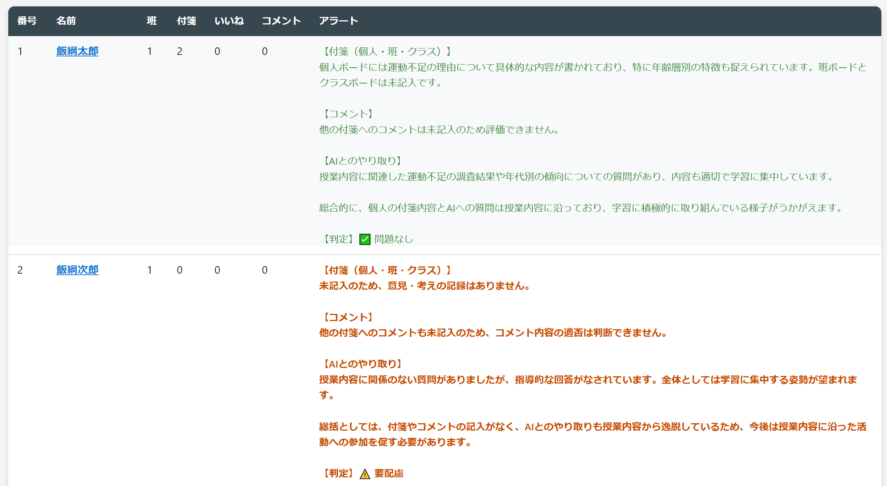
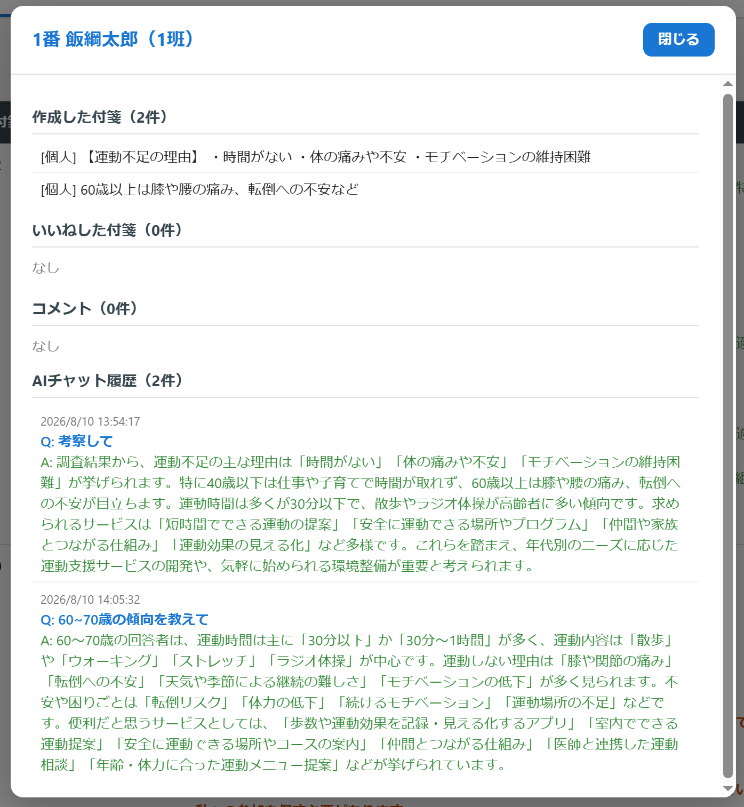
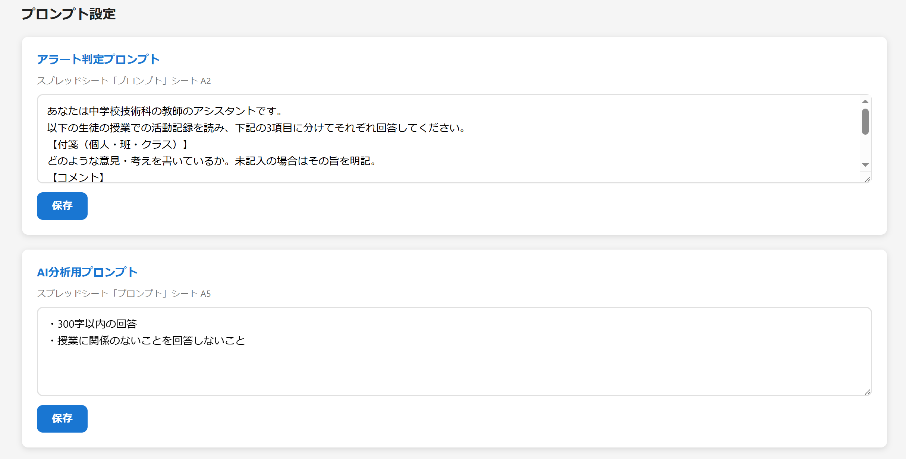

このシステムは、高齢者の運動課題をデータとプログラミングで解決する中学校技術科の授業をサポートするために作られた Google Apps Script 製のウェブアプリです。生徒・教師が同じ URL で使えます。
授業開始前に教師が行う設定です。一度設定すれば、以降の授業では不要です。
| 列 | 内容 | 例 |
|---|---|---|
| A列 | 名簿番号（数値） | 1, 2, 3 … |
| B列 | パスワード | pass123 |
| C列 | 表示名（生徒氏名） | 田中太郎 |
| D列 | 班番号（数値） | 1, 2, 3 … |
| E列 | 教師フラグ（教師のみ TRUE にチェック） | TRUE |
E列のチェックボックスを TRUE（チェック済み）にした行が教師アカウントになります。教師はダッシュボードにアクセスでき、付箋の貼り付け・アラート確認・AI分析が可能です。
| プロパティ名 | 値の内容 |
|---|---|
| AZURE_ENDPOINT | Azure OpenAI のエンドポイント URL |
| AZURE_API_KEY | Azure OpenAI の API キー |
| AZURE_DEPLOYMENT | デプロイメント名（例：gpt-4o） |
コードを変更した後は「デプロイを管理」→「新しいデプロイ」で再デプロイするか、既存のデプロイを「バージョンを更新」してください。URL は変わりません。
先生から配布された URL をブラウザで開くと、ログイン画面が表示されます。
名前を正確に入力してください。スペースや全角・半角の違いでログインできない場合があります。先生に確認しましょう。
ログインすると、授業テーマに合わせたデータ入力フォームが表示されます。計測データや調査結果を入力すると、画面にグラフや統計値として可視化されます。

可視化画面に表示されている数値・グラフ・コメントなどをクリックすると、モーダルウィンドウが開いて詳細情報を確認できます。入力データの内訳や他の生徒のコメントをその場で確認しながら考察を深めましょう。

3種類のスペースに付箋を貼って、意見・気づきを共有できます。
| スペース | 見える範囲 | 使い方の例 |
|---|---|---|
| 個人 | 自分と教師のみ | 自分の考えや気づきのメモ |
| 班 | 同じ班全員 + 教師 | 班での話し合いの共有 |
| クラス | クラス全員 + 教師 | 発表・全体共有の場 |

教師が貼った付箋は「【教師】」の名前で表示されます。授業のヒントやコメントが届くので確認しましょう。
授業に関する調べ物や疑問を AI に質問すると、その内容が個人シートに自動記録されます。

教師アカウントでログインすると、教師専用ダッシュボードが表示されます。生徒一覧・付箋ボード・AI分析設定の3つのタブで構成されています。
全生徒のアラート状態・最終分析日時を一覧で確認できます。

| 表示 | 意味 |
|---|---|
| 要配慮 | AIが授業と無関係な活動や要支援と判定した生徒 |
| 問題なし | 授業に集中して取り組んでいると判定された生徒 |
| 未分析 | まだAI分析が実行されていない生徒 |
このボタンを押すと、全生徒の活動データを AI が一括分析し、アラート判定を更新します。授業中に1〜2回押すことをおすすめします。
生徒数が多い場合、AI 分析に時間がかかります。ボタンが「分析中…」になっている間はお待ちください。
生徒名をクリックすると、その生徒の詳細情報（付箋内容・コメント・AI分析サマリー）が表示されます。

教師からクラス・班・個人に向けて付箋を貼ることができます。生徒のページにリアルタイムで反映されます。
貼った付箋はドラッグ＆ドロップで位置を変えられます。整理しながら使いましょう。
AI プロンプトの確認・変更ができます。「プロンプト」シートの内容がここに反映されます。

システムはすべてのデータを Google スプレッドシートに保存します。各シートの役割を理解しておくと、トラブル対応がしやすくなります。
| シート名 | 内容 | 操作者 |
|---|---|---|
| 生徒設定 | 生徒の名前・パスワード・班・教師フラグの一覧 | 教師が手動編集 |
| 付箋データ | 全付箋の内容・スペース・投稿者・位置情報 | システム自動 |
| コメントデータ | 付箋へのコメント一覧 | システム自動 |
| アラートキャッシュ | AI分析結果のキャッシュ（要配慮/問題なし・分析日時） | システム自動 |
| プロンプト | AIへの指示文（教師が内容を変更可能） | システム自動作成・教師編集可 |
| ひながた | 個人シートのテンプレート | 教師が事前準備 |
| （生徒名） | 各生徒のAI質問記録。生徒ごとに自動作成 | システム自動 |
AI への指示は「プロンプト」シートのセルで管理されています。初回設定タブを開いた時点でシステムが自動作成します。
| セル | 用途 |
|---|---|
| A2 | アラート判定プロンプト（付箋・コメント・AIやり取りを3項目で要約させる指示） |
| A5 | AI分析用プロンプト（個人分析に使う指示文） |
あなたは中学校技術科の教師のアシスタントです。 以下の生徒の授業での活動記録を読み、下記の3項目に分けてそれぞれ回答してください。各項目は改行して見やすく整理してください。 【付箋（個人・班・クラス）】 どのような意見・考えを書いているか。未記入の場合はその旨を明記。 【コメント】 他の生徒の付箋へのコメント内容は適切か。未記入の場合はその旨を明記。 【AIとのやり取り】 授業内容に関係があるか、逸脱した質問はないか。未記入の場合はその旨を明記。 問題がなければ各項目に「学習に集中しています」など肯定的に明記してください。
アラート機能は2段階の AI 処理で動作します。教師が「分析して更新」ボタンを押したときに実行されます。
AI の判定は完璧ではありません。アラートが出た生徒を確認する際は、詳細を開いて実際の活動内容を見てください。誤検知もあり得ます。
GAS のコードを変更した後は「デプロイ」→「デプロイを管理」→「編集（鉛筆アイコン）」→「バージョン：新しいバージョン」で保存してください。
基本的な操作はタブレット・スマートフォンでも動作します。ただし付箋のドラッグ＆ドロップはタッチ操作に対応しています。複雑な操作は PC が推奨です。